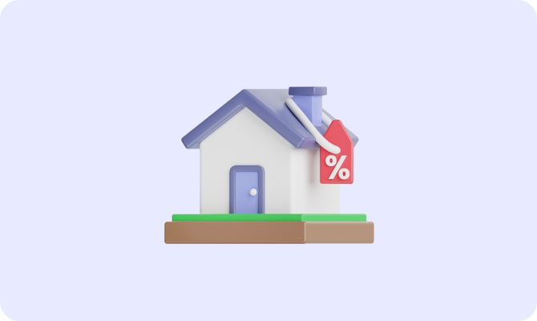

부동산
부동산 계약이 아직 어려운
당신을 위한 팁 특약사항
확인하기 #부동산초보
당신을 위한 팁 특약사항
확인하기 #부동산초보
부동산 계약을 체결할 때 가장 중요한 부분중 하나인 특약사항, 어떤 내용일까요?
특약사항은 부동산 계약의 기본적인 내용 외에 임대인과 협의한 세부적인 내용이에요. 이때 한 협의 내용을 계약서에 ‘특약사항‘으로 포함시킬 수 있어요.
예시를 들면 이런거에요계약할 집의 수도랑 벽지가 너무 낡아서 집 주인이 새 수도관과 벽지로 교체해준다고 했을 때 구두로만 끝내는것이 아닌 공인중개사를 통해 계약서에 명시할 경우, ‘특약사항’이 되는거에요.
(단 아무리 특약을 걸어도 그 내용이 사회질서를 위반할 경우, 법적 효력이 없어요.)
특약을 걸어두면 계약 이후 발생하는 서로간의 분쟁을 예방하는데 중요한 역할이 될 수 있어요, 또한 분쟁이 발생했을때 꼼꼼하게 기재해 둔 내용은 내 권리를 보호해 줄 방패가 되어줘요.
그렇다면 특약사항에 들어가면 좋은 내용은 뭐가 있을까요?
1. 전세자금대출
전세자금대출은 부동산 계약서를 가져가야 대출을 받을 수 있어요. 그렇다고 대출이 나오지 않았는데 무턱대고 계약을 진행하고 은행에 갔을 때, 대출 승인이 되지 않으면 굉장히 곤란한 상황에 처하게 돼요.(보통 전세자금대출은 매매 금액의 60~80% 정도를 받을 수 있다고 해요. 대출 가능한 금액을 미리 알아보시는것도 중요해요)이 때 특약으로 작성할 수 있는 예시를 보여드릴게요 [본 계약은 임차인의 전세자금대출을 전제로 하며, 대출이 미승인 된 경우 위 계약은 무효로 하여 임대인에게 지불한 가계약금을 즉시 임차인에게 반환한다.]이런 특약 내용은 단어나 내용이 모호하지 않고 정확하게 작성되어야 나중에 문제가 생겼을 때 분쟁이 줄어들어요. 만약 내용이 모호한 경우 해석의 여지가 달라질 수 있어서 가급적 법적 자문을 구할 수 있는 전문가와 상담하여 진행하는것이 좋아요.
2. 전세금반환 보증보험
임대인에게 보증보험 가입 승인이 나지 않은 경우도 있어요. 이 때 계약이 무효가 되며계약금, 중도금, 잔금 등 계약 시 지급한 전액을 반환받을 수 있도록 하는 내용의 특약문구가 필요해요.
이 외에도 임대인과 임차인간에 작성해두면 좋은 특약사항들을 잘 알아보시고 만약에 발생할수도 있는 분쟁을 미리 예방해 자신의 권리를 지킬 수 있도록 해요!